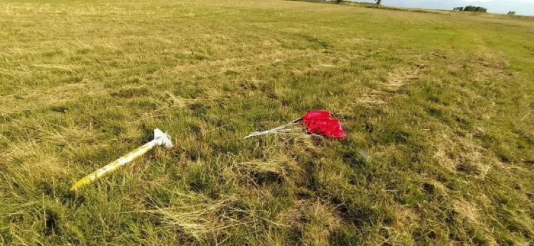
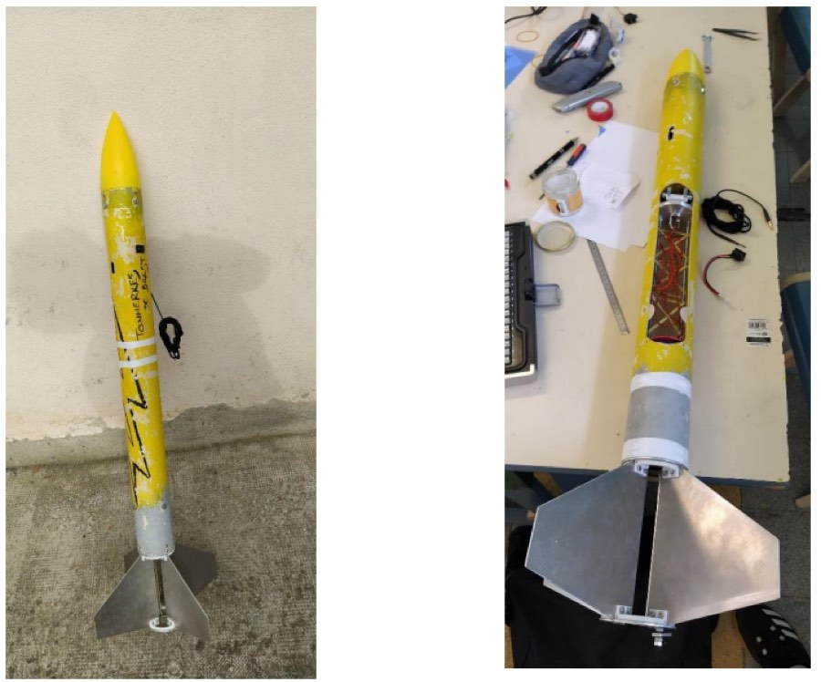
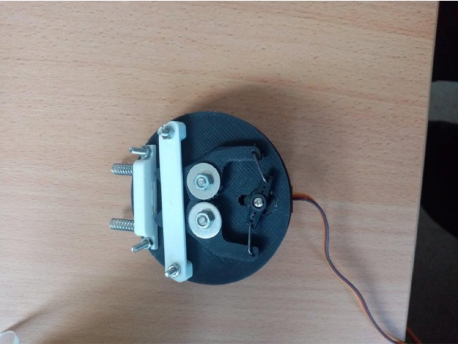
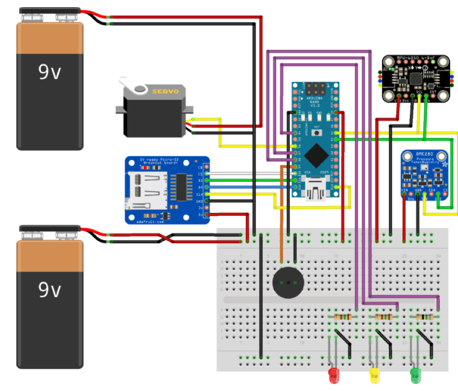
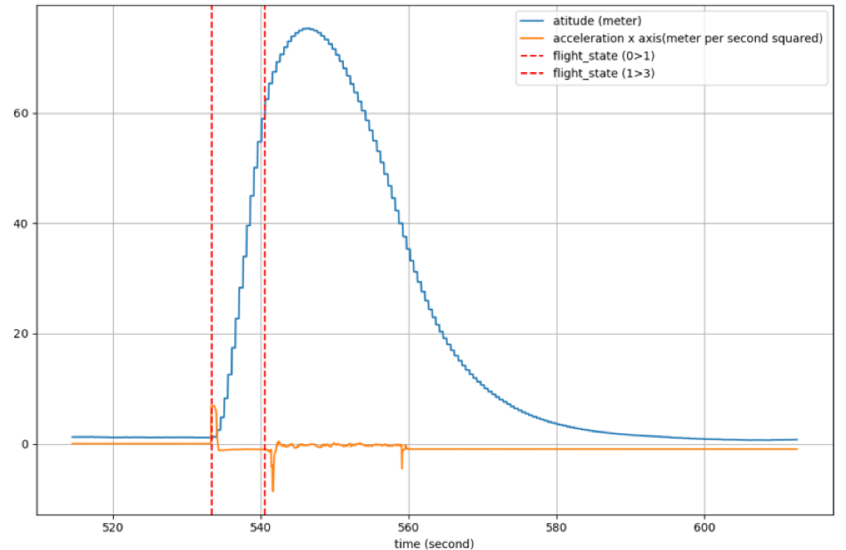

Student club project · Spacieta, ENSTA Bretagne
Tonnerre de Brest: a mini-rocket with onboard altimetry
Team: Valentin Gaucher, Louis-Maël Merlet, Mathieu Beot, Anna Brykman, Lucas Ducrocq, Elouan Petereau and Marc Poggi.

The build
The airframe splits into three parts:
- a propulsion block holding the booster,
- a core section housing the parachute, the ejection mechanism and the experiment electronics,
- a fairing.
The propulsion rings are 75 mm in diameter. The booster is held by a retaining bracket — a tab clamped by two bolts around a screw — chosen deliberately over anything cleverer because the tab's position is adjustable, so the clamping pressure against the booster flange can be tuned by hand. The fins were mounted with about 1 mm of clearance to the booster, to tolerate the booster swelling in flight.


Electronics
An Arduino Nano runs the flight computer, with a barometric pressure sensor as the experiment payload. Two separate 9 V supplies power the system: one for the servo that opens the parachute hatch, one for everything else. The reasoning was that a single supply might sag during flight, leaving the servo without the torque to open the hatch — and a parachute that does not deploy is the failure that destroys the rocket. A body-mounted switch arms the computer.

Launch campaign
The rocket arrived at C’space unfinished. The tube was machined on site for the switch and status LEDs, and the fins — judged too sharp by the safety inspection — were sanded down. After passing qualification with Planète Sciences staff, the team went to the pad.
Then, with the parachute folded and loaded, the ejection hatch opened on the pad, just before launch. The servo had lost power. It was caught and fixed in time, and the rocket flew.
Flight data

The flight was nominal and the rocket was recovered largely reusable, with the data intact. Peak altitude was 75 m against a predicted 128 m — a large enough shortfall to be the most interesting number in the project, and the conclusion points at the likely cause: the rocket came out heavier than designed.
Note that the time axis starts at 535 s, not zero: the flight computer was armed well before launch and its timer had been running since.
What it was good for
A complete cycle — design, build, qualify, fly, recover, analyse — run by students on a deadline, with a real launch campaign at the end of it. The second planned experiment, an onboard flight camera, was cut deliberately rather than risk the whole project missing the campaign; that trade was the right call and the rocket flew because of it.